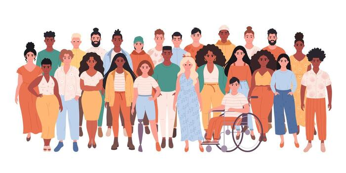

This site shares our journey exploring technology through the lenses of equity, intersectionality, and bias. Here, you’ll find information about each of us, our interests, hands-on experiences, and the tools we’ve been using. On our Resources page, we highlight materials about implicit bias and intersectionality to help visitors better understand these important concepts.
Kimberlé Crenshaw discusses how African American women are affected by discrimination, but she emphasizes that it's not only African American women - anyone with overlapping identities can face compounded forms of discrimination.
A specific example she gives involves a woman who was denied a job and claimed it was because she was an African American woman. The case was dismissed by a judge because the company argued that it had hired both African Americans and women. However, the issue was more nuanced: the company had hired only white women and only African American men. No African American women had been hired.
Crenshaw described this as intersectionality. She explained that it is fundamentally a framing problem: discrimination can affect people differently depending on the combination of identities they hold. Intersectionality highlights how multiple identities, such as race and gender, interact to create unique challenges that are often overlooked when considering discrimination one dimension at a time.